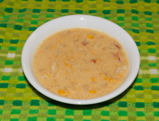

Welcome to the Hilltop Café
Homemade Food
We strive to provide nutritious homemade food. We partner with local farmers to use fresh, in season local produce.

Sandwiches
Sandwiches made with fresh ingredients. Try some of them today.
- Turkey
- A turkey sandwich with Swiss cheese, pickles, and lettuce.
- Ham
- A Ham sandwich with cheddar cheese, onions, and tomatoes.
- Grilled Cheese
- Melted Cheese on nicely toasted bread.
Soups
Great on a cold day.
- Loaded Baked Potato
- Creamy baked potato, corn, colby cheese and bacon.
- Chicken Tortilla Soup
- Spicy tomato and broth based chicken soup.
Top of page.